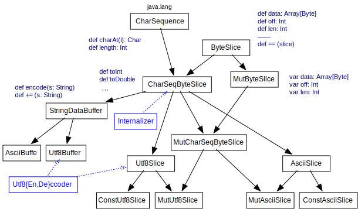

RACE Parsers
Most RACE applications require parsing text messages received from external systems such as SWIM. Such messages can come at a fairly high rate (e.g. >1000 msg/sec for a collection of SWIM topics) and messages can become quite large (~100kB for single SWIM messages). Since import of messages is usually just a prerequisite for RACE applications that process objects generated from these messages, support for efficient parsing is essential to leave enough CPU cycles and memory for the main actors of the application.
The RACE parsing infrastructure is centered around several assumptions:
- normally, we only process a subset of message types we receive, and only a subset of the information that is contained in processed messages
- since the rate of messages can be high, messages can be large and extracted information can be spread across these messages we should avoid creating a large amount of short living objects for the sole purpose of parsing (e.g. String objects for XML tags)
- our message sources are generally trusted, i.e. XML schema validation is usually not reqiured
For instance, SWIM reports en route flight positions every 12 sec, the number of simultaneous flights can exceed 4000. A flight element contains more than 60 tags of which we only parse 12 in order to generate track objects. This means we can save more than 300 temporary String allocations/sec just for this message type if XML tags are not reported/matched as Strings. Moreover, most of the extracted values are floating point numbers, i.e. are not stored as objects even in case they are relevant.
RACE uses its own PullParser infrastructure to minimize temporary objects and reduce processing time, providing explicit control over object construction for parse results.
The distinguishing factor of RACE pull parsers is that lexical constructs such as tags or values are
reported as mutable, pre-allocated gov.nasa.race.common.ByteSlice objects, which
represent ranges into utf-8 byte arrays and support efficient comparison by means of inlining (the
RACE build process is configured to inline contents of package gov.nasa.race.common.inlined).
Only in case of relevance are slice values converted into Strings or parsed into primitive values
such as Double.
To further improve performance of critical parse functions RACE also provides the
gov.nasa.race.tool.StringMatchGenerator tool that generates efficient slice matchers which
employ prefix factorization and loop unrolling in order to speed up matching against a set of
lexical constants such as tag names. While this can significantly increase performance it usually
does require manual completion to extract relevant values and reduces extensibility of the
respective parser.
RACE parser support is avaliable for XML, JSON (Javascript object notation) and CSV (comma
separated values) text formats. The respective classes reside in the gov.nasa.race.common
package of module race-core. Concrete parsers have to extend these abstract classes.
The following sections show example snippets for each of these text formats.
XML
The following example fragment is from the gov.nasa.race.air.translator.MessageCollection
parser that extracts SfdpsTrack objects from SWIm SFDPS MessageCollection messages:
class MessageCollectionParser(..) extends UTF8XmlPullParser2 .. { // (1) class definition
// (2) lexical constants
val _flight_ = ConstAsciiSlice("flight")
val _enRoute_ = ConstAsciiSlice("enRoute")
val _positionTime_ = ConstAsciiSlice("positionTime")
..
def parseMessageCollection: Unit = { ..
while (parseNextTag) { // (3) pull loop
if (isStartTag) {
if (tag == _flight_) { // (4) manual matching
parseFlight // (5) element parse functions
..
def parseFlight: Unit = {
// values to extract
var cs: String = null // (6) local value cache
var date = DateTime.UndefinedDateTime
..
def flight (data: Array[Byte], off: Int, len: Int): Unit = {
//--------------------------------------- (7) value extractors provided by user
@inline def process_flightIdentification = {
.. cs = attrValue.intern .. // (8) direct slice internalizer
@inline def process_position = {
if (tagHasParent(_enRoute_)) { // (9) element path matcher
if (parseAttr(_positionTime_)) { // (10) attribute matching
date = DateTime.parseYMDT(attrValue) // (11) attribute value extraction
..
//--------------------------------------- (12) match harness generated by StringMatchGenerator
@inline def match_flightIdentification = {len == 20 && data(off) == 102 && data(off+1) == 108 && ..
@inline def match_position = {len == 8 && ..
if (isStartTag) {
if (match_flightIdentification) {
process_flightIdentification
} else {
.. if (match_position) {
process_position
..
}
parseElement(flight) // (13) element pull loop
//--- object creation
if (cs != null && date.isDefined &7 ..) {
elements += new SfdpsTrack(cs,date,..) // (14) parse result
..
}| (1): | the concrete parser class is extending either UTF8XmlPullParser2 or StringXmlPullParser2,
depending on if the input data is a utf-8 byte array or a String object |
|---|
| (2): | parser implementation usually begins with definition of lexical constants for tag and attribute names |
|---|
| (3): | shows an explicit pull loop for XML elements (while (parseNextTag)..) |
|---|
| (4): | shows explicit tag matching. While this is efficient for single tests it is not optimal if we match a number of tags with common prefixes |
|---|
| (5): | since this is a pull parser we can provide methods that parse single elements in order to improve re-usability and readability of parsers |
|---|
| (6): | element parse functions that generate objects usually start with local variables to cache extracted element values |
|---|
| (7): | value extractor (process_X) methods are user provided |
|---|
| (8): | ByteSlice supports value extractors that avoid temporary allocations, such as direct String
internalizing from slices |
|---|
| (9): | value extractors can disambiguate tags by using element path queries. The XmlPullParser2 keeps track of current element paths |
|---|
| (10): | attribute parsing is optional |
|---|
| (11): | attribute value extraction is also slice based, i.e. works like element value extraction |
|---|
| (12): | performance critical element tag matchers can be generated by the StringMatchGenerator
tool (the match code does not require modification) |
|---|
| (13): | parseElement(<match-func>) is a convenience method that provides a pull loop over
child elements |
|---|
| (14): | eventually parse functions create objects (such as SfdpsTrack) that are the result
of parsing the XML message |
|---|
While this parser structure is flexible and efficient for extracting selected values it should be noted that it does not support on-the-fly XML schema validation.
JSON
The same pull parser infrastructure is also supported for JSON. The following is a snippet from
gov.nasa.race.air.translator.OpenSkyParser that parses a JSON object containing an array of
aircraft state vectors:
class OpenSkyParser extends UTF8JsonPullParser .. {
val _states_ = ConstAsciiSlice("states") .. // lexical constants
def parse (msg: Array[Byte], lim: Int): .. = {
def parseState: Unit = {
matchArrayStart
val cs = readQuotedValue.intern
skip(1)
val timePos = readUnQuotedValue.toLong
skip(1)
..
skipToEndOfCurrentLevel
matchArrayEnd
if (cs.nonEmpty && ..)
elements += new FlightPos(..,cs,..,timePos,..)
}
matchObjectStart
..
readMemberArray(_states_){
parseState // per-element parse function
}
matchObjectEndDue to the syntactic nature of JSON there is no generic parseElement but dedicated, type specific
pull methods such as match{Object,Array}Start and parse{Un}QuotedValue. Values are also
returned as ByteSlice objects, i.e. don't incur heap overhead. Array element and object member
parsing is supported by read{Member}Array and read{Member}Object pull loop functions that
are parameterized with element/member parse functions.
The JSONPullParser also supports syntactic levels and member key paths (the latter one being of
less importance for JSON).
CSV
Although comma separated value formats lack the syntactic structure of XML or JSON, RACE does
provide a similar pull parser that makes use of slices in order to minimize temporary object
allocation, especially in the context of extracting subsets of values. The following example is
from gov.nasa.race.air.SbsUpdater:
class SbsUpdater .. extends UTF8CsvPullParser {
val _MSG_ = ConstAsciiSlice("MSG") ..
..
def parse: Unit = {
while (skipToNextRecord) {
if (readNextValue == _MSG_) {
..
skip(2)
val icao24 = readNextValue.toHexLong // (1) mandatory value
..
skip(3)
val alt = if (parseNextNonEmptyValue) // (2) optional value
Feet(value.toInt) else UndefinedLength
..
if (.. alt.isDefined ..)
new FlightPos(icao24,..,alt,..)
}
skipToEndOfRecord
}The parser API contains a readNextValue method to return mandatory field slices (1) and
a parseNextValue for optional fields (2).
StringMatchGenerator tool
A performance critical task for XML parsing is to match tag and attribute names against a set of string constants. While this can be done manually by means of a sequence of tests:
val _a1_ = ConstAsciiSlice("a1")
val _a2_ = ConstAsciiSlice("a2")
..
if (tag == _a1_) ..
else if (tag == _a2_) ..
..this ignores common prefixes within a closed set of strings. Factoring such common prefixes is
a tedious task and hence RACE includes a gov.nasa.race.tool.StringMatchGenerator application
that generates respective sources. The script/smg script can be used to run the tool like this:
> script/smg gen a1 a2which will generate the sources to match a data range against "a1" and "a2":
def matchBytes(data: Array[Byte], off: Int, len: Int): Unit = {
//--- (1) replace with code to process respective matches
@inline def process_a1 = println("a1")
@inline def process_a2 = println("a2")
//--- (2) auto generated matcher code (no need to modify)
@inline def match_a = { len>=1 && data(off)==97 }
@inline def match_a1 = { len==2 && data(off+1)==49 }
@inline def match_a2 = { len==2 && data(off+1)==50 }
if (match_a) {
if (match_a1) {
process_a1
} else if (match_a2) {
process_a2
}
}
}The resulting matcher code (match_.. and if (match..).. expression) is invariant and can be
directly copied into clients, but semantic match actions (process_..) have to be modified.
The process_.. methods usually extract and store values or call recursive parse functions.
Use of the StringMatchGenerator is not without downsides since it reduces readability of parser
code. It should be mostly reserved for performance critical parse functions.
Parser input
All RACE parsers work on utf-8 byte arrays. Consequently, there is a UTF8{Xml,Json,Csv}PullParser
class that gets directly initialized with a byte array input. This is the preferred base class for
custom parsers since it avoids array allocation and string translation.
For String inputs there are buffered and unbuffered parser versions. The buffered parsers use a
pre-allocated byte buffer and RACEs UTFx.UTF8Decoder (which is a value class) to convert string
chars into utf-8 byte sequences. For efficiency reasons there are specialized ASCIIString versions
of string based parsers.
Although conversion into utf-8 byte arrays is transparent, the relevant supporting classes of RACE
(gov.nasa.race.common.UTFx and gov.nasa.race.common.StringDataBuffer) can be used separately,
e.g. in cases that have several clients requiring the same input.
ByteSlice hierarchy
Although they can be used independently for many string processing tasks,
gov.nasa.race.common.ByteSlice objects are a central element of RACE parsers.
To that end RACE includes a hierarchy of related types:

ByteSlice is itself just a trait that provides methods to specify a range within a byte array.
It does not define any fields and as such is invariant with respect to the range and source data
reference. It should be noted though that it does not guarantee invariant source array contents
(byte values). While we could use Scala's ArraySeq to also enforce invariant data this would
require data copies (heap allocations), and the primary purpose of ByteSlice is to avoid such
copies.
There are two dimensions of ByteSlice refinement - range mutability and semantic meaning
of byte values. Mutability of data source, offset and length is reflected in Mut.. and
Const.. variants of concrete ByteSlice classes and is generally self explaining.
While there could be other uses, the prevalent semantic meaning of ByteSlice byte values is to
represent string data, i.e. text. The primary text encoding format is now UTF-8 which uses up to
four byte values to represent unicode code points. This encoding is reflected in respective
Utf8.. variants of ByteSlice classes. However, while UTF-8 is byte compatible with the
ASCII character subset, processing general UTF-8 data requires encoding/decoding iteration over
respective byte arrays and hence can incur significant runtime overhead (ASCII processing often
can be done with simple indexed array element access and low level memory block operations). To
that end, we provide specialized Ascii.. slice classes that avoid this overhead, especially
given that our main target domain (airspace applications) primarily uses ASCII data.
The Java ecosystem reflects this fact by means of using the java.lang.CharSequence interface
for most text processing tasks, such as regular expression matching. In order to be compatible
with this ecosystem the perhaps most important ByteSlice refinement of RACE is the
CharSeqByteSlice that provides the required charAt(index) conversion. Since this is our
most basic text representation this trait also defines text-to-primitive conversions such as
toInt and toDouble.
In addition, the intern method allows to efficiently create internalized String objects directly
from slices, without resorting to temporary string allocations for the sole purpose of interned
string lookup. This is especially important in RACEs primary application domain which features a
high number of repetitive messages referring to the same entities (e.g. position update messages
using call signs to identify flights). Implementations of this method make use of RACE's
Internalizer and ASCII8Internalizer, the latter one being used for strings with up to 8
bytes (that can be directly represented as long values).
UTF-8 variants of CharSeqByteSlice use the Utf8Encoder/Utf8Decoder support in
gov.nasa.race.common.UTFx for character conversion, which utilizes Scala value classes to
store coder state and hence further reduces memory overhead.
ConstAsciiSlice is the primary representation for lexical constants such as tag names in RACE
parsers.
StringDataBuffer is the main construct to generate ByteSlice objects from Java String objects
(or other CharSequences) which encapsulates the dynamically allocated byte arrays to hold the
respective text data. There are two main objectives for this type: (1) to enable re-use of the
same buffer for successive string conversions (i.e. to avoid per-string object allocation such
as String.getBytes), and (2) to provide specialized conversions for ASCII text, which is
orders of magnitudes faster than iteration based unicode conversion.